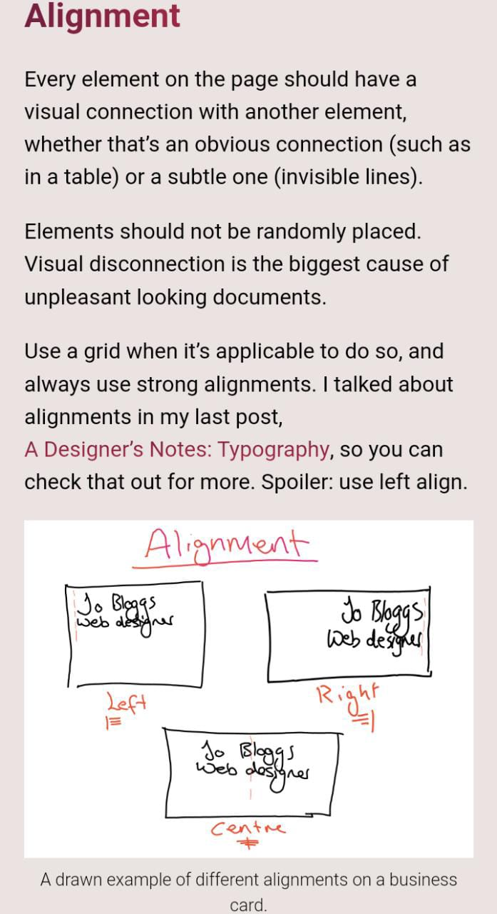
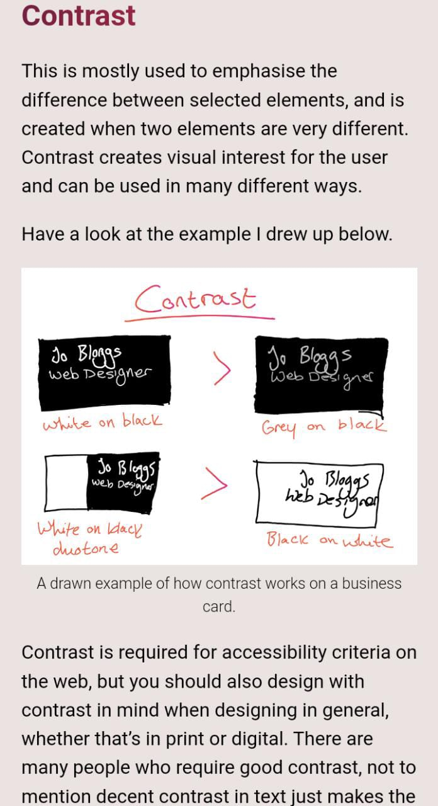

P.A.R.C Alignment
Facebook The alignment on this facebook login page is simple but it has all the items were it's "confortable" for the eye. It seems to has the right padding and margin between the components and all is well distributed.
White Space & Clean Design
Instagram
The amount of white space in this instagram login page fits the necessary space everyone needs when reading something. Also, has a clean design that means that all is readable and it does not seem as "dirty" to the eyes.
P.A.R.C Contrast
Ualá For this site were chosen an specific combination of colors in the range of blue, combined with white creating then a perfect harmony between both adding shadows. There were also chosen especific combinations for the cards, links, titles and buttons.